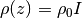
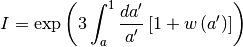
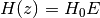
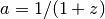
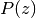
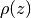
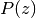
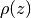

FLRW¶
- class astropy.cosmology.core.FLRW(H0, Om0, Ode0, Tcmb0=2.725, Neff=3.04, name='FLRW')[source] [edit on github]¶
Bases: astropy.cosmology.core.Cosmology
A class describing an isotropic and homogeneous (Friedmann-Lemaitre-Robertson-Walker) cosmology.
This is an abstract base class – you can’t instantiate examples of this class, but must work with one of its subclasses such as LambdaCDM or wCDM.
Notes
Class instances are static – you can’t change the values of the parameters. That is, all of the attributes above are read only.
The neutrino treatment assumes all neutrino species are massless.
Attributes Summary
H0 Return the Hubble constant in [km/sec/Mpc] at z=0 Neff Number of effective neutrino species Ode0 Omega dark energy; dark energy density/critical density at z=0 Ogamma0 Omega gamma; the density/critical density of photons at z=0 Ok0 Omega curvature; the effective curvature density/critical density Om0 Omega matter; matter density/critical density at z=0 Onu0 Omega nu; the density/critical density of neutrinos at z=0 Tcmb0 Temperature of the CMB in Kelvin at z=0 critical_density0 Critical density in [g cm^-3] at z=0 h Dimensionless Hubble constant: h = H_0 / 100 [km/sec/Mpc] hubble_distance Hubble distance in [Mpc] hubble_time Hubble time in [Gyr] Methods Summary
H(z) Hubble parameter (km/s/Mpc) at redshift z. Ode(z) Return the density parameter for dark energy at redshift z. Ogamma(z) Return the density parameter for photons at redshift z. Ok(z) Return the equivalent density parameter for curvature at redshift z. Om(z) Return the density parameter for non-relativistic matter at redshift z. Onu(z) Return the density parameter for massless neutrinos at redshift z. Tcmb(z) Return the CMB temperature at redshift z. absorption_distance(z) Absorption distance at redshift z. age(z) Age of the universe in Gyr at redshift z. angular_diameter_distance(z) Angular diameter distance in Mpc at a given redshift. angular_diameter_distance_z1z2(z1, z2) Angular diameter distance between objects at 2 redshifts. arcsec_per_kpc_comoving(z) Angular separation in arcsec corresponding to a comoving kpc at redshift z. arcsec_per_kpc_proper(z) Angular separation in arcsec corresponding to a proper kpc at redshift z. comoving_distance(z) Comoving line-of-sight distance in Mpc at a given redshift. comoving_transverse_distance(z) Comoving transverse distance in Mpc at a given redshift. comoving_volume(z) Comoving volume in cubic Mpc at redshift z. critical_density(z) Critical density in grams per cubic cm at redshift z. de_density_scale(z) Evaluates the redshift dependence of the dark energy density. distmod(z) Distance modulus at redshift z. efunc(z) Function used to calculate H(z), the Hubble parameter. inv_efunc(z) Inverse of efunc. kpc_comoving_per_arcmin(z) Separation in transverse comoving kpc corresponding to an arcminute at redshift z. kpc_proper_per_arcmin(z) Separation in transverse proper kpc corresponding to an arcminute at redshift z. lookback_time(z) Lookback time in Gyr to redshift z. luminosity_distance(z) Luminosity distance in Mpc at redshift z. scale_factor(z) Scale factor at redshift z. w(z) The dark energy equation of state. Attributes Documentation
Methods Documentation
- H(z)[source] [edit on github]¶
Hubble parameter (km/s/Mpc) at redshift z.
Parameters : z : array_like
Input redshifts.
Returns : H : ndarray, or float if input scalar
Hubble parameter in km/s/Mpc at each input redshift.
- Ode(z)[source] [edit on github]¶
Return the density parameter for dark energy at redshift z.
Parameters : z : array_like
Input redshifts.
Returns : Ode : ndarray, or float if input scalar
The density of non-relativistic matter relative to the critical density at each redshift.
- Ogamma(z)[source] [edit on github]¶
Return the density parameter for photons at redshift z.
Parameters : z : array_like
Input redshifts.
Returns : Ogamma : ndarray, or float if input scalar
The energy density of photons relative to the critical density at each redshift.
- Ok(z)[source] [edit on github]¶
Return the equivalent density parameter for curvature at redshift z.
Parameters : z : array_like
Input redshifts.
Returns : Ok : ndarray, or float if input scalar
The equivalent density parameter for curvature at each redshift.
- Om(z)[source] [edit on github]¶
Return the density parameter for non-relativistic matter at redshift z.
Parameters : z : array_like
Input redshifts.
Returns : Om : ndarray, or float if input scalar
The density of non-relativistic matter relative to the critical density at each redshift.
- Onu(z)[source] [edit on github]¶
Return the density parameter for massless neutrinos at redshift z.
Parameters : z : array_like
Input redshifts.
Returns : Onu : ndarray, or float if input scalar
The energy density of photons relative to the critical density at each redshift. Note that this includes only their relativistic energy, since they are assumed massless.
- Tcmb(z)[source] [edit on github]¶
Return the CMB temperature at redshift z.
Parameters : z : array_like
Input redshifts.
Returns : Tcmb : ndarray, or float if z is scalar
The temperature of the CMB in K.
- absorption_distance(z)[source] [edit on github]¶
Absorption distance at redshift z.
This is used to calculate the number of objects with some cross section of absorption and number density intersecting a sightline per unit redshift path.
Parameters : z : array_like
Input redshifts.
Returns : d : ndarray, or float if input scalar
Absorption distance (dimensionless) at each input redshift.
References
Hogg 1999 Section 11. (astro-ph/9905116) Bahcall, John N. and Peebles, P.J.E. 1969, ApJ, 156L, 7B
- age(z)[source] [edit on github]¶
Age of the universe in Gyr at redshift z.
Parameters : z : array_like
Input redshifts.
Returns : t : ndarray, or float if input scalar
The age of the universe in Gyr at each input redshift.
- angular_diameter_distance(z)[source] [edit on github]¶
Angular diameter distance in Mpc at a given redshift.
This gives the proper (sometimes called ‘physical’) transverse distance corresponding to an angle of 1 radian for an object at redshift z.
Weinberg, 1972, pp 421-424; Weedman, 1986, pp 65-67; Peebles, 1993, pp 325-327.
Parameters : z : array_like
Input redshifts.
Returns : d : ndarray, or float if input scalar
Angular diameter distance in Mpc at each input redshift.
- angular_diameter_distance_z1z2(z1, z2)[source] [edit on github]¶
Angular diameter distance between objects at 2 redshifts. Useful for gravitational lensing.
Parameters : z1, z2 : array_like, shape (N,)
Input redshifts. z2 must be large than z1.
Returns : d : ndarray, shape (N,) or float if input scalar
The angular diameter distance between each input redshift pair.
Raises : CosmologyError :
If omega_k is < 0.
Notes
This method only works for flat or open curvature (omega_k >= 0).
- arcsec_per_kpc_comoving(z)[source] [edit on github]¶
Angular separation in arcsec corresponding to a comoving kpc at redshift z.
Parameters : z : array_like
Input redshifts.
Returns : theta : ndarray, or float if input scalar
The angular separation in arcsec corresponding to a comoving kpc at each input redshift.
- arcsec_per_kpc_proper(z)[source] [edit on github]¶
Angular separation in arcsec corresponding to a proper kpc at redshift z.
Parameters : z : array_like
Input redshifts.
Returns : theta : ndarray, or float if input scalar
The angular separation in arcsec corresponding to a proper kpc at each input redshift.
- comoving_distance(z)[source] [edit on github]¶
Comoving line-of-sight distance in Mpc at a given redshift.
The comoving distance along the line-of-sight between two objects remains constant with time for objects in the Hubble flow.
Parameters : z : array_like
Input redshifts.
Returns : d : ndarray, or float if input scalar
Comoving distance in Mpc to each input redshift.
- comoving_transverse_distance(z)[source] [edit on github]¶
Comoving transverse distance in Mpc at a given redshift.
This value is the transverse comoving distance at redshift z corresponding to an angular separation of 1 radian. This is the same as the comoving distance if omega_k is zero (as in the current concordance lambda CDM model).
Parameters : z : array_like
Input redshifts.
Returns : d : ndarray, or float if input scalar
Comoving transverse distance in Mpc at each input redshift.
Notes
This quantity also called the ‘proper motion distance’ in some texts.
- comoving_volume(z)[source] [edit on github]¶
Comoving volume in cubic Mpc at redshift z.
This is the volume of the universe encompassed by redshifts less than z. For the case of omega_k = 0 it is a sphere of radius comoving_distance(z) but it is less intuitive if omega_k is not 0.
Parameters : z : array_like
Input redshifts.
Returns : V : ndarray, or float if input scalar
Comoving volume in Mpc^3 at each input redshift.
- critical_density(z)[source] [edit on github]¶
Critical density in grams per cubic cm at redshift z.
Parameters : z : array_like
Input redshifts.
Returns : rho : ndarray, or float if input scalar
Critical density in g/cm^3 at each input redshift.
- de_density_scale(z)[source] [edit on github]¶
Evaluates the redshift dependence of the dark energy density.
Parameters : z : array_like
Input redshifts.
Returns : I : ndarray, or float if input scalar
The scaling of the energy density of dark energy with redshift.
Notes
The scaling factor, I, is defined by , and is given by

It will generally helpful for subclasses to overload this method if the integral can be done analytically for the particular dark energy equation of state that they implement.
- distmod(z)[source] [edit on github]¶
Distance modulus at redshift z.
The distance modulus is defined as the (apparent magnitude - absolute magnitude) for an object at redshift z.
Parameters : z : array_like
Input redshifts.
Returns : distmod : ndarray, or float if input scalar
Distance modulus at each input redshift.
- efunc(z)[source] [edit on github]¶
Function used to calculate H(z), the Hubble parameter.
Parameters : z : array_like
Input redshifts.
Returns : E : ndarray, or float if input scalar
The redshift scaling of the Hubble constant.
Notes
The return value, E, is defined such that .
It is not necessary to override this method, but if de_density_scale takes a particularly simple form, it may be advantageous to.
- inv_efunc(z)[source] [edit on github]¶
Inverse of efunc.
Parameters : z : array_like
Input redshifts.
Returns : E : ndarray, or float if input scalar
The redshift scaling of the inverse Hubble constant.
- kpc_comoving_per_arcmin(z)[source] [edit on github]¶
Separation in transverse comoving kpc corresponding to an arcminute at redshift z.
Parameters : z : array_like
Input redshifts.
Returns : d : ndarray, or float if input scalar
The distance in comoving kpc corresponding to an arcmin at each input redshift.
- kpc_proper_per_arcmin(z)[source] [edit on github]¶
Separation in transverse proper kpc corresponding to an arcminute at redshift z.
Parameters : z : array_like
Input redshifts.
Returns : d : ndarray, or float if input scalar
The distance in proper kpc corresponding to an arcmin at each input redshift.
- lookback_time(z)[source] [edit on github]¶
Lookback time in Gyr to redshift z.
The lookback time is the difference between the age of the Universe now and the age at redshift z.
Parameters : z : array_like
Input redshifts.
Returns : t : ndarray, or float if input scalar
Lookback time in Gyr to each input redshift.
- luminosity_distance(z)[source] [edit on github]¶
Luminosity distance in Mpc at redshift z.
This is the distance to use when converting between the bolometric flux from an object at redshift z and its bolometric luminosity.
Parameters : z : array_like
Input redshifts.
Returns : d : ndarray, or float if input scalar
Luminosity distance in Mpc at each input redshift.
References
Weinberg, 1972, pp 420-424; Weedman, 1986, pp 60-62.
- scale_factor(z)[source] [edit on github]¶
Scale factor at redshift z.
The scale factor is defined as .
Parameters : z : array_like
Input redshifts.
Returns : a : ndarray, or float if input scalar
Scale factor at each input redshift.
- w(z)[source] [edit on github]¶
The dark energy equation of state.
Parameters : z : array_like
Input redshifts.
Returns : w : ndarray, or float if input scalar
The dark energy equation of state
Notes
The dark energy equation of state is defined as
 , where  is the
pressure at redshift z and  is the density
at redshift z, both in units where c=1.
, where  is the
pressure at redshift z and  is the density
at redshift z, both in units where c=1.This must be overridden by subclasses.